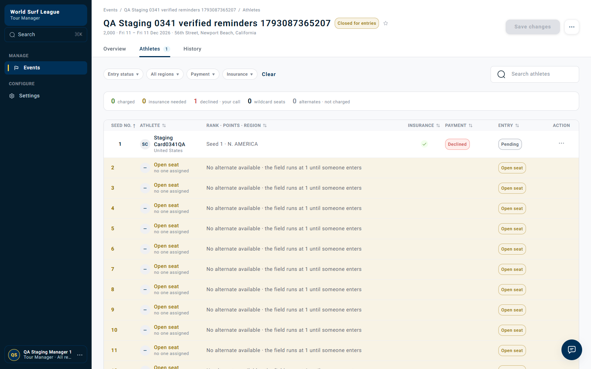
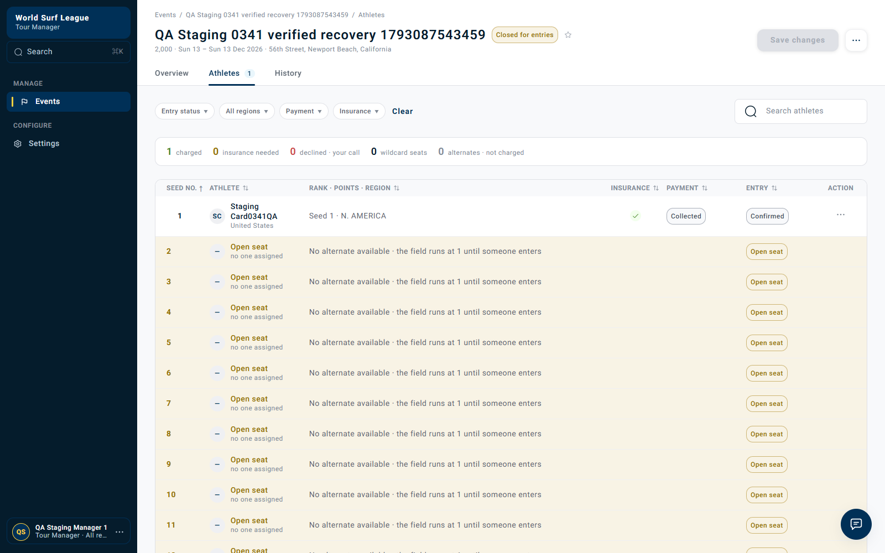
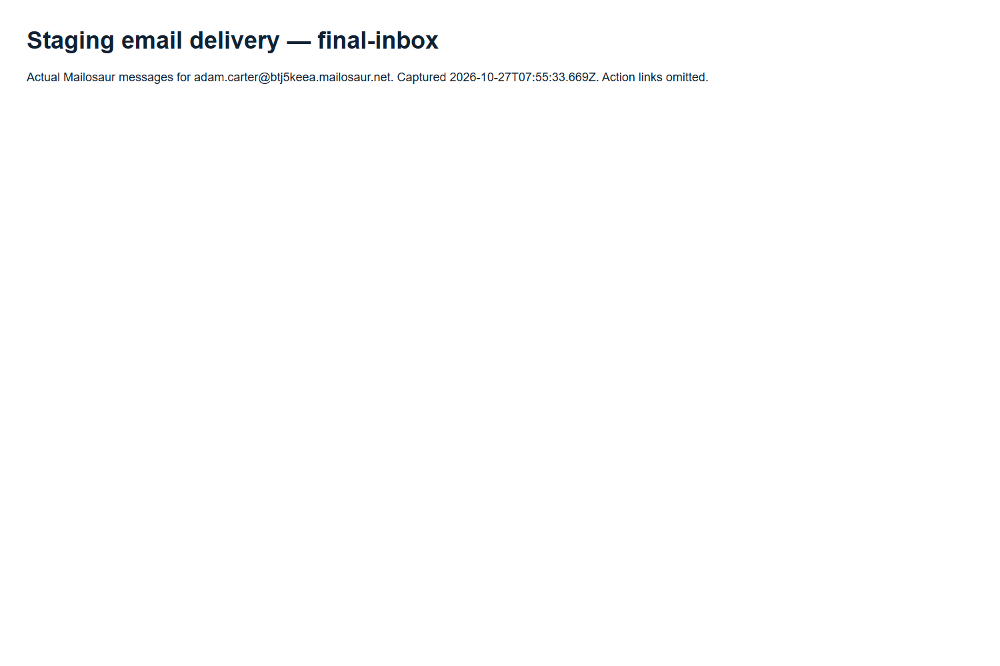

Staging payment recovery and reminders
27 October 2026 · app.staging01.worldsurfleague.com · all timestamps UTC · isolated QA fixtures · Stripe test mode.
What happened
Payment recovery PASS. A real event charge with card 0341 declined. The athlete then selected a newly saved Visa 4242 through the authenticated card-change API. The entry reached Confirmed / Collected. The refreshed Tour Manager screen and history confirm the result.
Email delivery BLOCKED by SES quota. Adam’s address was verified and enabled for sending. Competition published four reminders and an expiry escalation; notification attempted sending them and recorded Daily message quota exceeded. No message reached Mailosaur during the observed window. SES quota read-back: 234 sends in the last 24 hours against 200 allowed. This is an actual delivery failure, not a recipient-verification issue.
Manual Tour Manager Retry payment was not clicked. Card replacement initiated recovery automatically. Automatic retries on an insufficient-funds card and a browser-only card-update journey were not covered by this run.
Simple flow
Verified Adam email → active membership → event registration with card 0341 → Tour Manager Confirm & charge → Declined.
Reminder branch: worker at 24h → 72h → 120h → 168h → four reminder events + expiry event published → notification send attempts → SES daily quota exceeded → inbox empty.
Separate recovery branch: fresh event with declined 0341 → save test Visa 4242 → POST /entries/{entryId}/card returns 202 → automatic recovery → Collected / Confirmed.
Executed checks
| Check | Result and evidence |
|---|---|
| SES recipient | PASS: adam.carter@btj5keea.mailosaur.net, SUCCESS / sending enabled. Read-back |
| 0341 initial decline | PASS: HTTP 200 charge; payment Declined, generic_decline in history and Retry action offered. Requests / history |
| Fixture 24 hours | notices=1, flags=0, card retries=0, worker failures=0. Stored notices total=1. Worker read-back |
| Fixture 24-repeat hours | notices=0, flags=0, card retries=0, worker failures=0. Stored notices total=1. Worker read-back |
| Fixture 72 hours | notices=1, flags=0, card retries=0, worker failures=0. Stored notices total=2. Worker read-back |
| Fixture 120 hours | notices=1, flags=0, card retries=0, worker failures=0. Stored notices total=3. Worker read-back |
| Fixture 168 hours | notices=1, flags=1, card retries=0, worker failures=0. Stored notices total=4. Worker read-back |
| Fixture 168-repeat hours | notices=0, flags=0, card retries=0, worker failures=0. Stored notices total=4. Worker read-back |
| Valid-card recovery | PASS: card change HTTP 202; Confirmed / Collected. Complete API and roster evidence |
| Reminder delivery | BLOCKED: all 5 payment-notification delivery records failed; no SES message IDs. Delivery audit · Quota |
| Mailosaur inbox | 0 messages between 2026-10-27T07:48:28.176Z and 2026-10-27T07:55:33.669Z. Search result · Readable inbox capture |
Recordings and screenshots
Recordings show actual browser execution. Inbox recording displays the captured Mailosaur API result, rather than the Mailosaur product UI. Every published recording was decoded to EOF: validation ledger.
Tour Manager: initial decline
Athlete entry recording · Membership setup recording

Valid-card recovery
The card change uses the athlete API. The recording shows the manager screen before and after recovery, with a reload for the final state.

Recovery fixture initial decline recording · Recovery fixture entry registration recording
Observed inbox

Notification failure records
| Created UTC | Subject | Result |
|---|---|---|
| 2026-10-27 07:49:58.670805+00:00 | Your WSL Pro membership is active | failed: Daily message quota exceeded. |
| 2026-10-27 07:51:24.620918+00:00 | Your entry fee for QA Staging 0341 verified reminders 1793087365207 could not be taken | failed: Daily message quota exceeded. |
| 2026-10-27 07:51:44.849822+00:00 | Your entry fee for QA Staging 0341 verified reminders 1793087365207 could not be taken | failed: Daily message quota exceeded. |
| 2026-10-27 07:52:24.917227+00:00 | Your entry fee for QA Staging 0341 verified reminders 1793087365207 could not be taken | failed: Daily message quota exceeded. |
| 2026-10-27 07:52:29.972533+00:00 | Action needed: your place at QA Staging 0341 verified reminders 1793087365207 is at risk | failed: Daily message quota exceeded. |
| 2026-10-27 07:55:49.897931+00:00 | Your entry fee for QA Staging 0341 verified reminders 1793087365207 could not be taken | failed: Daily message quota exceeded. |
Competition outbox publication times · Notification delivery records
Technical scope and next step
Staging pinned rule version 2: retries 24/72/168h; notices 24/72/120/168h; grace 168h; short notice 9 days. Reminder-only worker used a per-fixture future clock; it did not change the server clock, shared rules or failure timestamps. It committed notice counters, outbox events and the expiry flag for the explicit reminder entry. The other entry was recovered through normal athlete and payment APIs.
Expiry event 01a17c55-ec70-7333-af02-76705f0a39e5, entry 01a17c56-9312-77d0-9ded-614b5a2f0ff0. Recovery event 01a17c58-a5cf-7720-a229-4afd85fc106f, entry 01a17c59-420c-72d4-9d2f-adfdc51fc8db.
After SES capacity is available, use a fresh reminder fixture to verify actual inbox delivery. This run does not establish successful delivery, nor does the successful card recovery establish a passing manual-retry flow. No quota, identity, service deployment or shared configuration was changed.